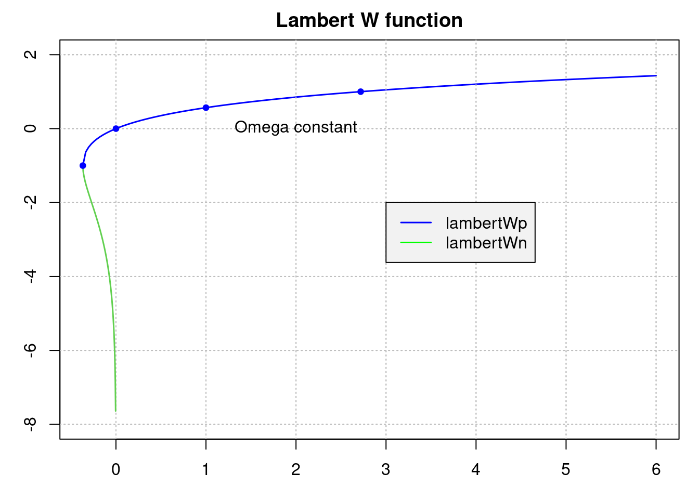
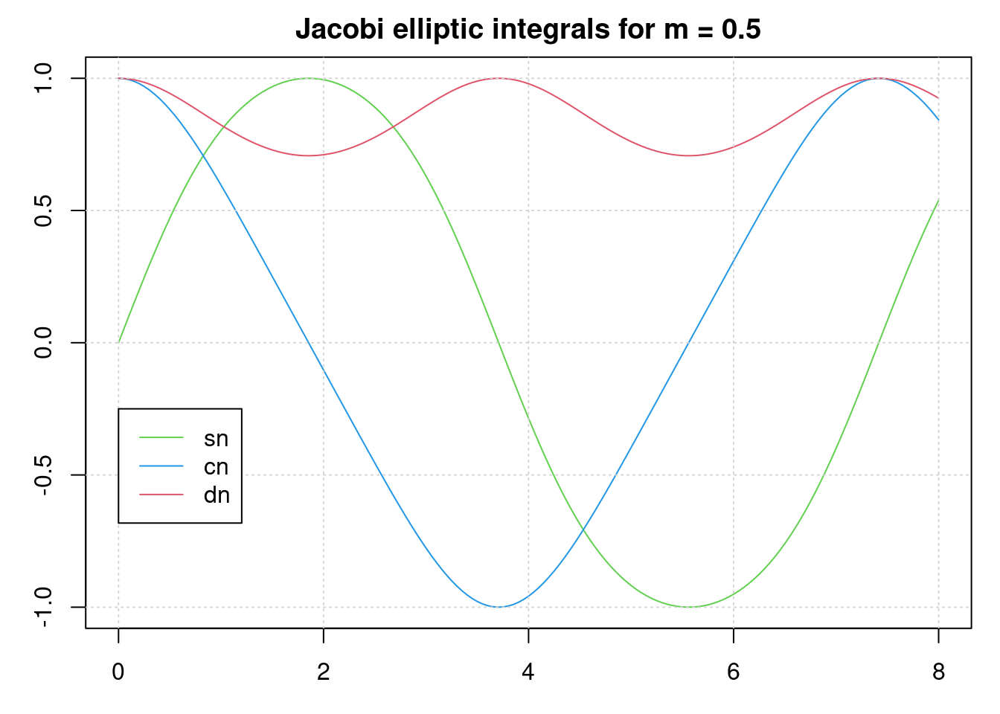
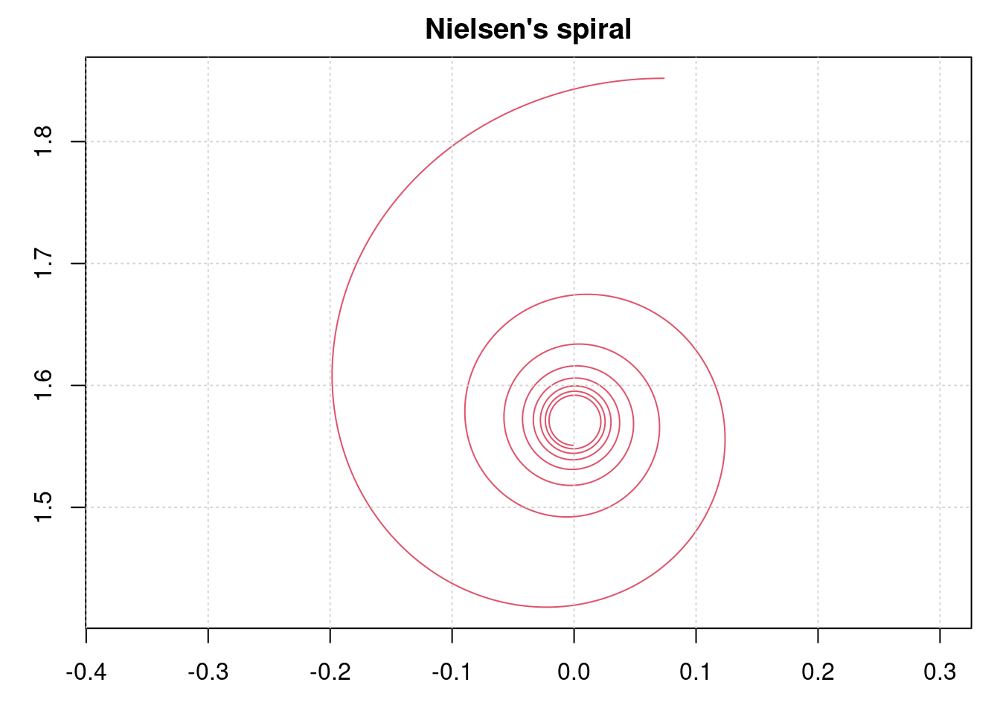
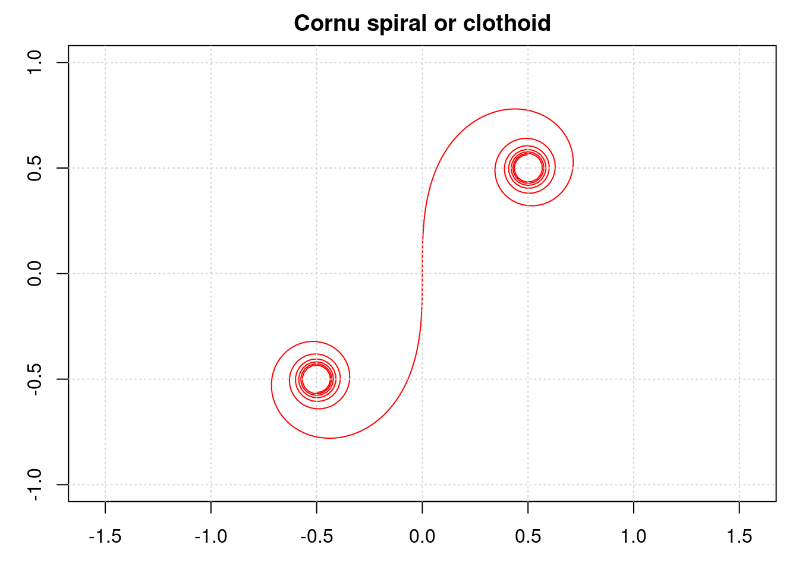
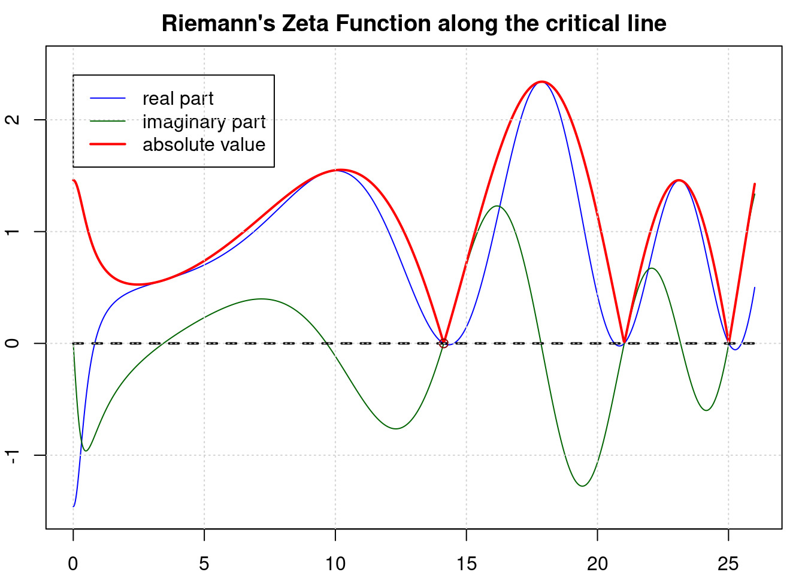

library(pracma)
sin(pi); sind(180)[1] 1.224647e-16[1] 0The pracma package contains many special functions from Mathematics and Mathematical Physics. Some of them are also provided in other R packages, others may not. They are compiled in pracma as they appear to be a basic ingredient in all kinds of scientific computations.
Another source of special functions for R is the gsl package, providing a wrapper for some of the functions of the Gnu Scientific Library (GSL). Among the functions available are Airy functions, Bessel functions, elliptic and exponential functions, hypergeometric functions, Legendre functions, or Digamma functions, to list only a few.
Airy and Bessel functions, for real and complex numbers, are computed with high accuracy in package Bessel. Weierstrass and Jacobi elliptic (and related) functions are available in elliptic. Gauss’ Hypergeometric function is implemented in the hypergeo package.
Base R contains the usual trigonometric functions sin, cos, and tan and their inverses asin, acos, and atan. Also, atan2 is here, calculating the angle between the x-axis and the vector (x, y) in a more precise way (i.e., atan2(x,y) = atan(y/x)). These functions accept complex values as input.
The usual trigonometric cotangens, cosecans, and secans functions and their inverses are not available in Base R. In pracma they are computed through the other well known sine, cosine, and tangens functions.
cot(z) acot(z)
csc(z) acsc(z)
sec(z) asec(z)Like the trigonometric functions in R they accept complex numbers as input.
R provides the hyperbolic sine, cosine, and tangens functions (and their inverses), pracma adds the cotangens, cosecans, and secans functions and their inverses, computed through the other hyperbolic sine, cosine, and tangens functions.
coth(z) acoth(z)
csch(z) acsch(z)
sech(z) asech(z)The usual trigonometric functions such as the sine and cosine functions sin, cos, etc., are included with R and utilize the standard C libraries. pracma knows all these functions with an appended d, indicating they take degrees instead of radians as input.
library(pracma)
sin(pi); sind(180)[1] 1.224647e-16[1] 0These functions try to be more exact at multiples of pi or pi/2. Internally thay use the functions sinpi and cospi that are part of Base R and the standard C libraries, but may be unknown to many users.
Trigonometric functions with degree inputs provided by pracma are
sind(x) asind(x) secd(x) atan2d(x1, x2)
cosd(x) acosd(x) cscd(x)
tand(x) atand(x) asecd(x)
cotd(x) acotd(x) acscd(x)The reason all these (not really necessary) functions are present in pracma is mostly that they are part of MATLAB under the same name.
The functions gamma and lgamma in R return the gamma function and the natural logarithm of the absolute value of the gamma function for real input (except 0 and negative integers). digamma and trigamma return the first and second derivatives of the logarithm of the gamma function.
In pracma, gammaz computes the complex gamma function, valid in the entire complex plane, using the Lanczos series approximation. Accuracy is assumed to be 13 significant digits. As an example, see Euler’s reflection formula:
z <- 1 + 1i
gammaz(1-z) * gammaz(z) # == pi/sin(pi*z)[1] 0+0.2720291iThere are also the lower, upper and regularized ‘incomplete gamma’ functions, defined for real values alone. \[
γ(x, a) = \int_0^x e^{-t} \, t^{a-1} \, dt
\] and \[
Γ(x, a) = \int_x^{∞} e^{-t} \, t^{a-1} \, dt
\] The regularized incomplete gamma function is \(\gamma(x,a)/\Gamma(a)\). All three values will be returned by gammainc, while the function incgam calculates the upper incomplete gamma function (with higher accuracy).
gammainc(1.5, 2.0) lowinc uppinc reginc
0.4421746 0.5578254 0.4421746 These values could be retrieved from incgam(1.5, 2.0) alone.
The Lambert W function is given as the inverse of \(f(x) = x e^x\), for positive \(x\), and therefore lambertW(0) = 0. Its positive branch for \(x >= 0\) is defined as lambertWp. In the intervall \((-1/e, 0]\) there is a second, negative branch called with lambertWn.

The value at \(x = 1\) is named (Gauss’) omega constant and has a value of
omega = pracma::lambertWp(1.0)
print(omega, digits = 16)[1] 0.5671432904097838The Lambert W function in pracma is computed through “Halley’s method” and is quite fast and accurate.
Elliptic integrals arose first in connection with the problem of computing the arc length of ellipses and more general conic sections.
Complete elliptic integrals of the first and second kind, often named K and E, are defined as \[
K(x) = \int_0^{\pi/2} \frac{dt}{\sqrt{1 - x^2\,\sin^2(t)}}
\] \[
E(x) = \int_0^{\pi/2} \sqrt{1 - k^2\,\sin^2(t)} dt
\]
The function name in pracma is ellipke. It returns a list with two components, k the value for the first kind, e the value for the second kind.
e = sqrt(1 - 0.5^2/1^2) # ellipsis with axes 1, 1/2
ellipke(e)$k
[1] 2.441342
$e
[1] 1.131469An ellipsis with semi-major axis \(a\) and semi-minor \(b\), and thus eccentricity \(e = \sqrt{1 - b^2/a^2}\), has a total circumference of \(U = 4 a E(e)\).
cat("circumference(1.0, 0.5) =", 4 * 1.0 * ellipke(e)$e)circumference(1.0, 0.5) = 4.525876Jacobi elliptic functions are defined as inverses of the incomplete elliptic integral of the first kind. If \[
u = \int_0^x \frac{dt}{\sqrt{1 - m\,\sin^2(t)}}
\] then the elliptic sine sn and cosine cn functions are given by \[
sn(u) = \sin(x); cn(u) = \cos(x)
\] and the delta amplitude dn as \[
dn(u) = \sqrt{1 - m\,\sin^2(x)}
\]
ellipj computes the Jacobi elliptic integrals sn, cn, and dn in one go.
u <- c(0, 1, 2, 3, 4) # use (u[i], m[i])
m <- 0.5
( je = ellipj(u, m) )## $sn 0.000000 0.803002 0.994662 0.630029 -0.285778
## $cn 1.000000 0.595977 -0.103184 -0.776572 -0.958296
## $dn 1.000000 0.823161 0.710861 0.895283 0.979370The following relations are always valid: \(sn^2 + cn^2 = 1\) and \(dn^2 + m \cdot sn^2 = 1\).

The exponential integral functions \(E1\) and \(Ei\) are for real \(x > 0\) defined as \[ E1(x) = \int_x^\infty \frac{e^{-t}}{t} \, dt; \qquad Ei(x) = \int_{-\infty}^x \frac{e^t}{t} \, dt; \]
Both can be extended to the complex plane by analytic continuation. The relationship between them is \(Ei(x) = -E1(-x) - i\pi\).
These functions are implemented as expint_E1 (with ‘alias’ expint) and expint_Ei.
The logarithmic integral \(li\) – li in pracma – is defined for \(x > 0\) as \[
li(x) = \int_0^x \frac{dt}{\log(t)}
\] while the Eulerian logarithmic integral \(Li\) is \(Li(x) = li(x) - li(2)\). \(Li\) approximates the prime number function \(\pi(n)\), that is the number of primes below or equal to \(n\).
Table: Estimation of prime numbers
| n | no. primes | Li estimate | accuracy |
|---|---|---|---|
| 1 | 5 | 4 | 0.2500000000 |
| 2 | 29 | 25 | 0.1600000000 |
| 3 | 177 | 168 | 0.0535714286 |
| 4 | 1245 | 1229 | 0.0130187144 |
| 5 | 9629 | 9592 | 0.0038573812 |
| 6 | 78627 | 78498 | 0.0016433540 |
| 7 | 664917 | 664579 | 0.0005085927 |
| 8 | 5762208 | 5761455 | 0.0001306962 |
| 9 | 50849234 | 50847534 | 0.0000334333 |
For generating this table we used the following functions:
estimPi <- function(n) round(Re(li(n) - li(2))) # estimated number of primes
primesPi <- function(n) length(primes(n)) # true number of primes <= ni.e., the logarithmic integral and the primes function from pracma.
The sine and cosine integrals are defined with the sinc function as integrand. \[
Si(x) = \int_0^x \frac{\sin(t)}{t} dt
\] resp. as \[
Ci(x) = - \int_x^\infty \frac{\cos(t)}{t} dt = γ + \log(x) + \int_0^x \frac{\cos(t)-1}{t} dt
\] (The value Ci(x) is not correct, it should be Ci(x)+pi*i, only the real part is returned.)
The spiral formed by a parametric plot of Si and Ci is known as Nielsen’s spiral and is closely related to the Cornu spiral, see below.

There are also hyperbolic sine Shi and cosine Chi integrals, with e.g. \(\sinh\) instead of \(\sin\) in the definition above. There is a relation \({\displaystyle \operatorname {Si} (ix)=i\operatorname {Shi} (x).}\), which does not work here as Si accepts only real values.
The ‘normalized’ Fresnel integrals \(S\) and \(C\) are defined as \[ S(x) = \int_0^x \sin(π/2 \, t^2) dt \] and \[ C(x) = \int_0^x \cos(π/2 \, t^2) dt \]
The integral \(\int_0^x \sin(t^2) dt\) can then be calculated as \(\sqrt{\pi/2}\,S(\sqrt{2/\pi}\,x)\).
They are used in optics and are closely related to the error function. In pracma they are available as fresnelS resp. fresnelC. Plotting one against the other will display the well-known Cornu (or Euler) spiral.

The celebrated Riemann zeta function is defined as \[ \zeta(s) = \sum_{n=1}^\infty \frac{1}{n^s} \] which is converging for all complex numbers \(s\) with \(Re(s) > 1\). The function can be extended to the complex plane by analytic continuation. It has a pole in \(s = 1\) and so-called trivial zeros in \(-2, -4, -6, ...\).
The pracma function zeta computes Riemann’s zeta function in the entire complex plane.
The Riemann conjecture says that the only non-trivial zeros of the zeta function all lie on the critical line \(Re(s) = \frac{1}{2}\). Let’ calculate the first one (of the billions that have been found) applying the Newton-Raphson method.
f = function(x) abs(zeta(0.5+x*1i))
z1 = newtonRaphson(f, 12, maxiter = 1000, tol = 1e-16)$root
print(z1, digits=16)[1] 14.13472514173372the true value being \(z1 = 14.\,134\,725\,141\,734\,693\,790\,...\).

This plot also suggests that there may be very many zeros on the critical line.
The Dirichlet eta function, aka ‘alternating zeta function’, is for complex numbers \(z\) with \(Re(z) > 0\) defined as \[ \eta(s) = \sum_{n=1}^\infty \frac{(-1)^{n-1}}{n^s} = \frac{1}{1^s} - \frac{1}{2^s} + \frac{1}{3^s} - \frac{1}{4^s} +- ... \]
The following relation holds: \(\eta(s) = (1 - 2^{1-s}) \cdot \zeta(s)\). As an alternating series it is easier to calculate precisely, and is utilized here to find values for the zeta function, too.
We will compute Apery’s constant zeta(3) with the help of eta, applying the “alternating series acceleration” of Cohen et al., implemented in pracma’s sumalt function.
eta_alt = function(k) (-1)^k / (k+1)^3 # starts with k=0
apery = 4/3 * sumalt(eta_alt, 21)
print(apery, digits = 16)[1] 1.202056903159594The true value of Apery’s constant is \(1.20205690315959428...\). It was long unknown whether this number is irrational, it is still unknown whether it is a transcendental number.